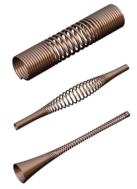
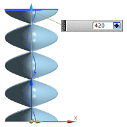
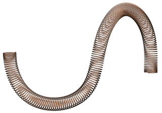

The Helix command workflow is enhanced in a number of ways. You can now:
Create a helix with an associative start point and direction.
Use law types to define variable pitch and size values.
|
|
|
|

|
Control the length of a helix by defining start and end limits using on-screen handles, or by number of turns.

Define a helix along a 3D path.

Use the Helix command when a helical driven object is required. Helical-driven designs are common in such products as conveyor systems, drilling equipment, tools, as well as in industrial design styling applications.
|
Application |
Modeling, Shape Studio |
|
Toolbar |
Curve→Curve Drop-down→Helix |
|
Menu |
Insert→Curve→Helix |